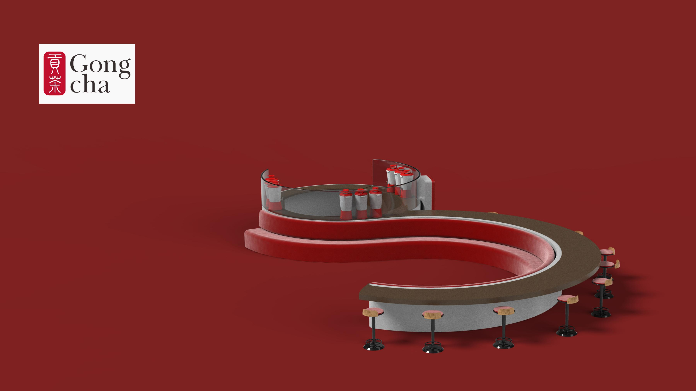

A small, meaningful pause built into the rush of travel — Narita International Airport.

This kiosk reimagines the typical Gong Cha location — usually built for fast takeout — as a small, meaningful pause within the rush of travel. Set at Narita International Airport, the space is designed to offer a sense of joy, warmth, and connection in a setting that's often rushed and overwhelming, introducing seating and a stronger social element that most Gong Cha stores don't have.
Milk tea was chosen deliberately: unlike coffee, which often relies on step-heavy preparation, boba's streamlined assembly process supports faster, easier, and more consistent production — a better fit for the pace of an airport.
The process moved from space selection and user research (personas Leo and Maya, built around real airport frustrations like choice paralysis and lack of seating), through material and form scavenger hunts, a moodboard, and floor plan iteration, to a final 360-degree production table sized for high-volume service.
The final design balances efficiency, comfort, and emotional ease within a fast-paced airport environment. Quick ordering, organized drink production, and a seating area that supports both rest and productivity work together to reduce stress while giving guests a moment to pause and recharge. Its warm, social atmosphere turns a simple drink stop into a more enjoyable experience — supporting both the practical and emotional needs of travelers passing through.